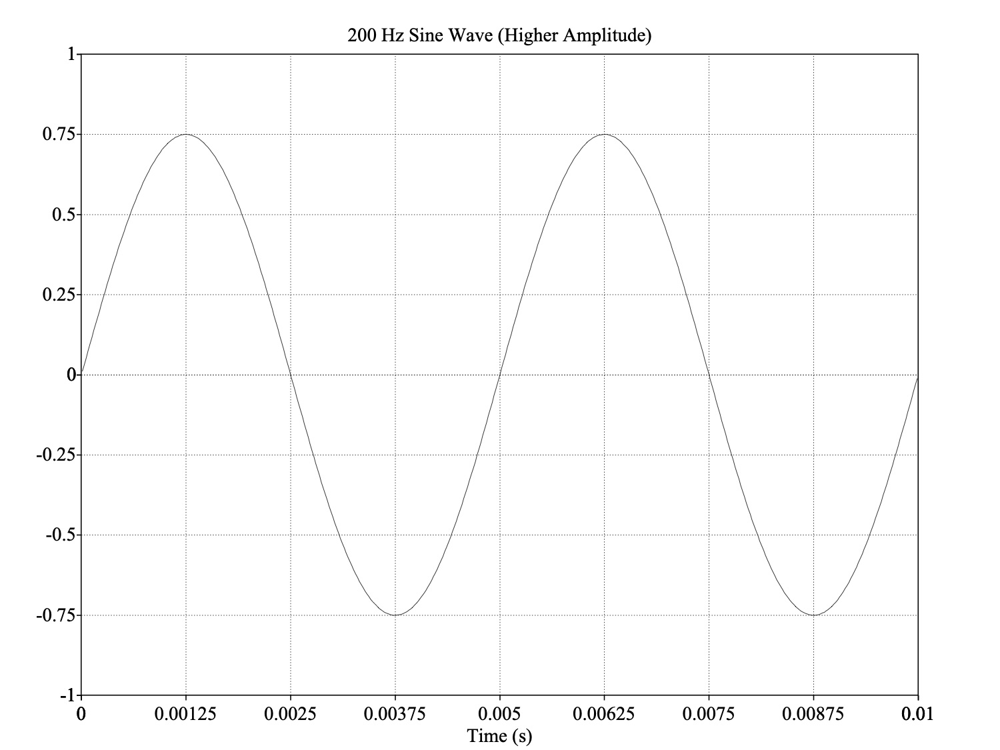
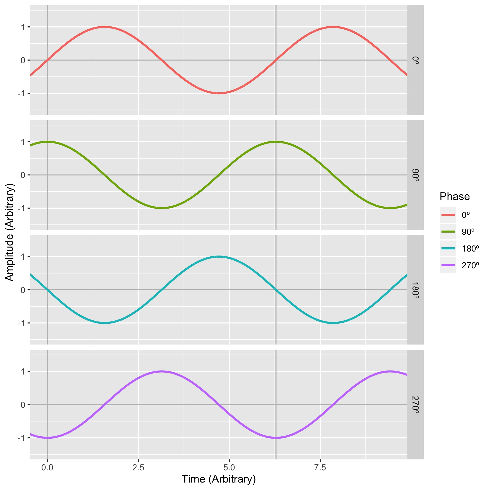
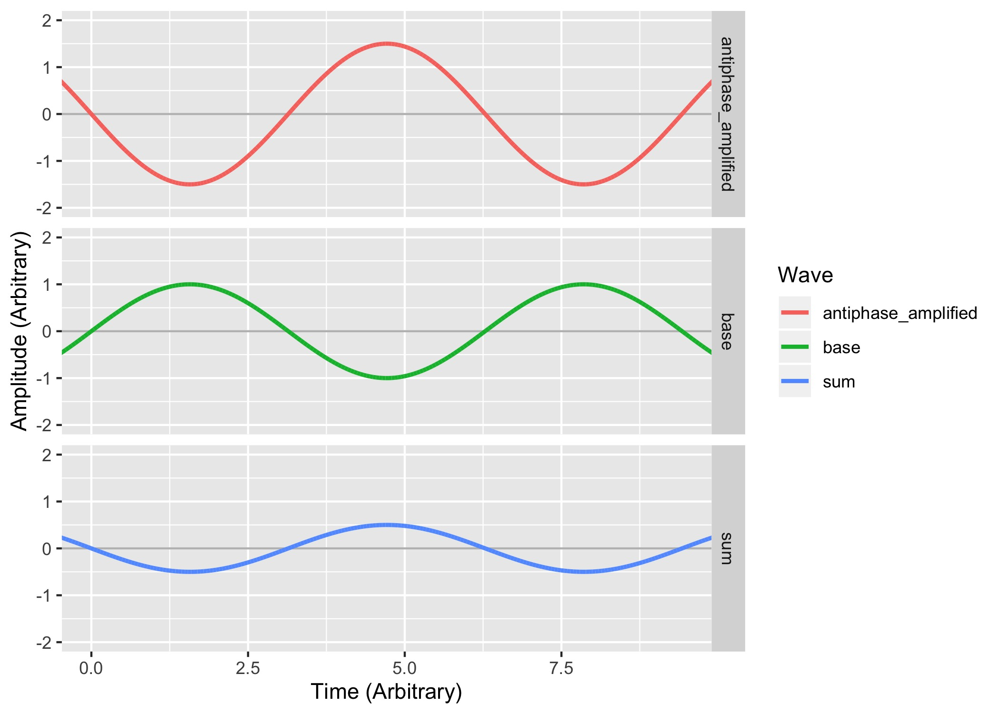
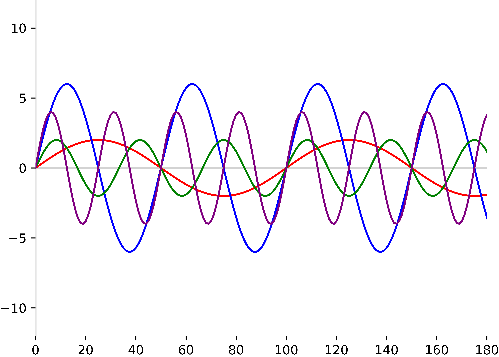
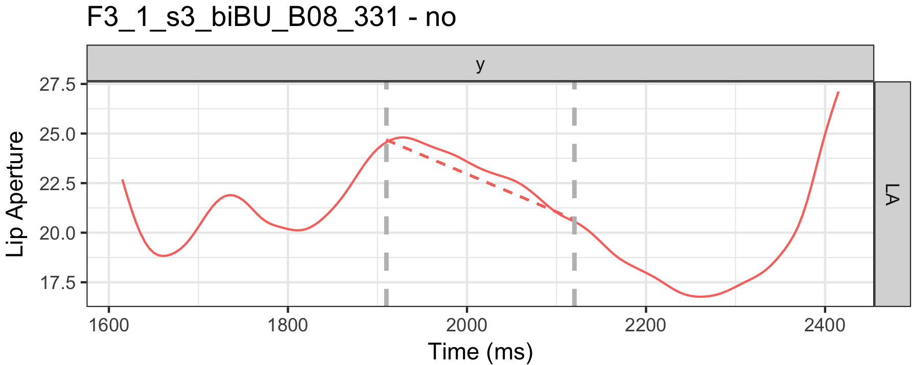
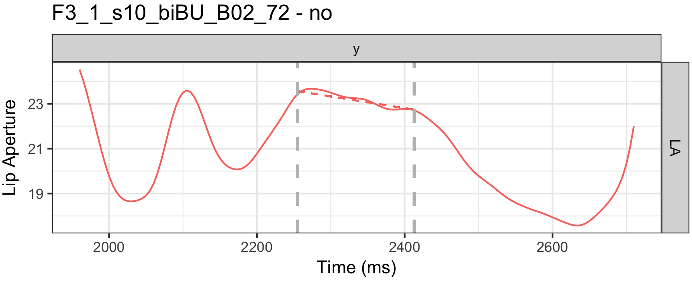

# An Introduction to Periodic Data ### Will Styler --- ### Today's Plan - Functional and Periodic Data - Properties of Periodic Data - Decomposing periodic signals - Other analyses for Functional and Periodic Data --- ### Functional Data - Data where the quantity of interest varies over a continuous domain - "How has the population of registered changed over time?" - "Does the likelihood of Russian use in Ukrainian Poems vary as a function of distance from the border?" - "As children age, how does their ability to build complex words increase?" - "What is the shape of the tongue from front to back making an L sound?" --- ### Time Series Data are functional! - Any time you observe a measure over time and sample/measure regularly, you've made a time series, and that's functional - Generally requires continuous sampling - Comparing data in 1987, 1998, 2004 and 2011 is not really functional - Neither is comparing 18 year olds to 40 year olds --- ### Functional Data doesn't have to be one dimensional <img class="r-stretch" src="phonmedia/ultrasound_bulk_bigchange.jpg"> --- ### Some kinds of functional data can be analyzed with conventional approaches - OLS and Linear regression - Things like non-linear (e.g. log, sigmoid) fits, polynomials, b-splines, and other splines can let you capture curvature - Fancy tools like GAMM or Smoothing Spline ANOVA (SSANOVA) allow inference over functions - One kind of functional data breaks all of this... --- ### Periodic Data - *Functional, time-series which are characterized by repeating patterns, rather than a single line or trend* - Periodic data are generally from continuous measurements over a range (often time) - Sometimes periodic patterns happen in non-time data (e.g. elevation through sand dunes, or wave patterns on a beach) --- ### Examples of periodicity - Sound data are *inherently periodic* - Heater/Air conditioner Sales over time - Any data containing 'Cycles' (e.g. Solar Cycle, Campaign Data, Tides) - Heart/Brain Activity in humans --- ### CO2 Levels in my Home Office <img class="r-stretch" src="img/willco2_day.jpg"> --- ### CO2 Levels in my Home Office <img class="r-stretch" src="img/willco2_week.jpg"> --- ### Water Level of the Rio Negro at Manaus, Brazil <img class="r-stretch" src="img/manauslevels.jpg"> --- ### Water Level of the Rio Negro at Manaus, Brazil <img class="r-stretch" src="img/manauswater.jpg"> --- ### Periodic Data Breaks Conventional Methods - Moment measures aren't useful - Fitting lines doesn't work well - Modeling with high-degree-of-freedom functional methods explodes - Deciding *how often to sample* can feel daunting --- ### How do we describe the nature of periodic data?? - Let's do some sound reasoning --- ### Sound is compression and rarefaction in a medium <img class="r-stretch" src="phonmedia/sound_diagram.jpg"> --- ### It is wildly complex <img class="r-stretch" src="phonmedia/noisewaveform.jpg"> --- ### The Key Properties of Periodic Signals - Duration - How long does it last on X? - Amplitude - How large are the waves on Y? - Frequency - How often does it cycle? - Period - How long does a single cycle take? - Phase - Where in the cycle does the wave start? --- ### Duration - We talk about sounds in Milliseconds or Seconds - Your data may have a duration which is equal to the amount of time sampled --- <img class="r-stretch" src="phonmedia/200Hz.jpg"> --- ### Amplitude - In sound, what is the difference in pressure between compressions and rarefactions (in dB)? - This is related to 'loudness' - In other signals, it's the difference between 'low' and 'high' sections --- <img class="r-stretch" src="phonmedia/200Hz.jpg"> ---  --- ### Period - How long does a single cycle last? - In data, there are often *multiple periods* arising from independent phenomena or interactions --- <img class="r-stretch" src="phonmedia/200Hz.jpg"> --- <img class="r-stretch" src="phonmedia/200Hz.jpg"> - Here, 0.005 seconds (5 ms) <audio controls src="phonmedia/200Hz.wav"></audio> --- <img class="r-stretch" src="phonmedia/400Hz.jpg"> --- <img class="r-stretch" src="phonmedia/400Hz.jpg"> - Here, 0.0025 seconds (2.5ms) <audio controls src="phonmedia/400Hz.wav"></audio> --- ### Phase - The point of the cycle in which a signal 'starts' - The 'orientation' of the wave in time - We measure phase in Degrees (°) - 0° is the base, and is the same as 360° - 180° is the exact opposite phase from 0° ---  --- ### Phase is important for adding periodic signals together! - Signals that are 'in phase' experience constructive interference - Signals that are 'out of phase' experience destructive interference - This is how noise cancelling headphones and car mufflers work - Differences in phase can mask the strength and patterns of cycles! - "Air conditioner sales are steady throughout the year" can result from opposite phase peaks in two hemispheres --- ### Constructive Interference <img class="r-stretch" src="diagrams/phase_ampbase_separate.jpg"> --- ### Destructive Interference/Phase Cancellation <img class="r-stretch" src="diagrams/phase_combined_separate.jpg"> --- ### Complete cancellation is relatively rare!  --- ### Frequency - "How many times does the signal cycle in one second?" - Measured in 'Hertz' (Hz), also known as 'Cycles per second' - Closely related to pitch - 'How many periods can fit in one second?' --- # f = 1/t - f = Frequency in Hz - t = Period in Seconds --- <img class="r-stretch" src="phonmedia/200Hz.jpg"> --- <img class="r-stretch" src="phonmedia/200Hz.jpg"> - Period = 0.005 seconds - Frequency = 1/0.005 = **200 Hz** --- <img class="r-stretch" src="phonmedia/400Hz.jpg"> - Period = 0.0025 seconds - Frequency = 1/0.0025 = **400 Hz** --- ### Greater period = Lower Frequency! - Longer cycles == Fewer Cycles per Second - Hertz is a dumb unit for longer timescales - Yearly is approximately 31.7 nanohertz --- ### High frequency signals have many peaks in a short amount of time! - This means we have to be conscientious about how often we measure them! --- ## How often do you have to measure? --- ### Computers don't do waves <img class="r-stretch" src="phonmedia/sampling_raw.jpg"> 010001110010101000100101101010101010 --- ### Sound is analog, computers are digital - How do we deal with that? --- ### Quantization - Also known as 'digitization', 'discretization', or 'sampling' - "Let's just measure the sound a LOT and store those values" --- ### Quantization <img class="r-stretch" src="diagrams/sampling_perfectwave.png"> --- ### Quantization <img class="r-stretch" src="diagrams/sampling_sampled.png"> --- ### Quantization <img class="r-stretch" src="diagrams/sampling_withlines.png"> --- ### Quantization <img class="r-stretch" src="diagrams/sampling_justlines.png"> --- ### Analog-to-digital conversion - Sample the wave many times per second - Record the amplitude at each sample - The resulting wave will faithfully capture the signal --- ### How often do we sample? - This is called the 'Sampling Rate' - Measured in samples per second (Hz) - **This is the same question as 'how often do I collect data from my population?'** --- ### Sampling Rate <img class="r-stretch" src="diagrams/sampling_sampled.png"> --- ### Sampling Rate (low rate) <img class="r-stretch" src="diagrams/sampling_lowrate.png"> --- ### Sampling Rate (low rate) <img class="r-stretch" src="diagrams/sampling_lowratejustlines.png"> --- ### Sampling Rate (lower rate) <img class="r-stretch" src="diagrams/sampling_verylow.png"> --- ### Sampling Rate (lower rate) <img class="r-stretch" src="diagrams/sampling_verylow2.png"> --- ### Bad sampling makes for bad waves <img class="r-stretch" src="phonmedia/sampling_undersampled.jpg"> --- ### Good sampling rates capture the necessary set of frequencies <img class="r-stretch" src="diagrams/sampling_sampled.png"> --- ### Good sampling rates capture the necessary set of frequencies <img class="r-stretch" src="diagrams/sampling_clip_orig.png"> --- ### Higher frequencies need higher sampling rates <img class="r-stretch" src="diagrams/sampling_sampled_hifreq.png"> --- ### Higher frequencies need higher sampling rates <img class="r-stretch" src="diagrams/sampling_sampled_ultrahifreq.png"> --- ## Nyquist Theorem The highest frequency captured by a sample signal is one half the sampling rate --- ### Sampling Rates (Shpongle - 'Nothing is something worth doing') 44,100 Hz <audio controls src="phonmedia/nothingsomething44100.wav"></audio> 22,050 Hz <audio controls src="phonmedia/nothingsomething22050.wav"></audio> 11,025 Hz <audio controls src="phonmedia/nothingsomething11025.wav"></audio> 6000 Hz <audio controls src="phonmedia/nothingsomething6000.wav"></audio> --- ### Sampling Rates (Shpongle - 'Nothing is something worth doing') 44,100 Hz <audio controls src="phonmedia/nothingsomething44100.wav"></audio> 6000 Hz <audio controls src="phonmedia/nothingsomething6000.wav"></audio> 3000 Hz <audio controls src="phonmedia/nothingsomething3000.wav"></audio> 1500 Hz <audio controls src="phonmedia/nothingsomething1500.wav"></audio> 800 Hz <audio controls src="phonmedia/nothingsomething800.wav"></audio> --- ### "Great, we know the key properties, and can sample accordingly..." - "... but my signals aren't sine waves!" --- ### CO2 Levels in my Home Office <img class="r-stretch" src="img/willco2_week.jpg"> --- ### Water Level of the Rio Negro at Manaus, Brazil <img class="r-stretch" src="img/manauswater.jpg"> --- ### The Word 'Noise' <img class="r-stretch" src="phonmedia/noisewaveform.jpg"> --- **"How do I still measure these properties in complex sounds?"** --- ## Measuring Complex Sounds --- ### Fourier Transform - There's a lot to this, but it breaks sounds into their component frequencies, powers, and phases --- ### Here's a nice video on Fourier Transforms <https://www.youtube.com/watch?v=spUNpyF58BY> "But what is the Fourier Transform? A visual introduction" by 3Blue1Brown --- <img class="r-stretch" src="diagrams/fft_combined.png"> ---  --- <img class="r-stretch" src="diagrams/fft_separated_wavefft.png"> --- ### This yields 'Power Spectra', 'Spectra', or 'FFTs' - These show you the relative amplitude of the component waves - It can turn a very hard-to-understand pattern into something substantially easier - **This tells you what subcomponents make up complex waves!** --- ### Our cochleas are doing something like fourier analysis! <img class="r-stretch" src="hearing/basilar_frequencies.jpg"> --- ### Aside: You can visualize frequency and power over time with Spectrograms <img class="r-stretch" src="phonmedia/noisespectrogram.jpg"> --- ### Spectral analysis can be valuable! - We hear spectral information, with frequency and amplitude being the largest predictors of speech sound identity - "Air conditioner sales are simultaneously predicted by the seasonal yearly heat cycle, and by the weekly cycle, with more walk-in sales on the weekends" - c.f. Things Will made up - "There is no evidence of a role for the 11-year solar cycle on peak river height in Manaus" - See Styler 2059 'Examples I made up to explain Fourier Transforms' - "We see Will returning to his home office every 24 hours, on two different cycles (one in the morning and one in the evening)" - This **simplifies patterns substantially**! --- ## What else can I do with functional and periodic data? --- ## Functional Principal Component Analysis (fPCA) - "Feed all the curves in, then observe the dominant *patterns* of variation" - Each pattern is called a "component" - Each component is *orthogonal* to the others, representing an independent type of difference - Each item is given a score for each component --- ## Pause Postures - Specific configurations of speech articulators at strong pauses in sentences - Moving articulator(s) to an separate and different target during a pause - Pause postures *per se* first described by Katsika (2014) in Greek - Further Described in... - J. Krivokapic, W. Styler, D. Byrd. _The role of speech planning in the articulation of pauses_ - J. Krivokapic, W. Styler, B. Parrell. _Pause postures: The relationship between articulation and cognitive processes during pauses._ --- ### Electromagnetic Articulography (EMA) Carstens AG501 System <img class="r-stretch" src="phonmedia/ema_will.jpg"> --- ### EMA: The Basics Small wired sensors are glued to the articulators <img class="r-stretch" src="phonmedia/emasensor.jpg"> <!-- .element: class="fragment" --> --- ### EMA Sensor Placement (Tongue) <img class="r-stretch" src="phonmedia/ema_will_4.jpg"> --- ### EMA Sensor Placement (Lips) <img class="r-stretch" src="phonmedia/ema_lips.jpg"> --- ### EMA Data <img class="wide" src="phonmedia/M4_14_mview.jpg"> --- ### Pause Postures in Lip Movement <img class="r-stretch" src="pausepostures/no_F3_1_s3_biBU_B08_331_LA_clean.png"> --- ### Pause Postures in Lip Movement <img class="r-stretch" src="pausepostures/yes_F3_1_s6_biBU_B06_237_LA_clean.png"> --- ### Some pause postures are quite clear <img class="r-stretch" src="pausepostures/yes_F3_1_s3_MIma_B05_212_LA.png"> --- ### Some pause postures are quite clear <img class="r-stretch" src="pausepostures/yes_F3_1_s6_biBU_B06_237_LA.png"> --- ### Some clearly lack Pause Postures  --- ### Some clearly lack Pause Postures  --- ### Functional Principal Component Analysis helps identify Pause Postures! - If every pause is a curve, find the **dominant patterns of curvature!** - Some principal components should represent the pause postures! - Strength of each component shows *degree* of the posture --- ### fPCA Analysis: Trajectory Modeling <img class="r-stretch" src="pausepostures/yes_M4_1_s8_MIma_B01_14_LA.png"> --- ### Components for the Trajectory PCA <img class="r-stretch" src="pausepostures/RawPCA_LA_ed.png"> --- ### More on this could be yours, if you'd like - Just request me to give my 'Machine Learning for Speech' talk in Spring! --- ### fPCA helps find patterns of curvature - Wildly useful tool for inference and understanding of curves - Frankly, a great tool for your toolbox --- ## Discrete Cosine Transform (DCT) - Expresses a curve or signal as a sum of cosine functions at different frequencies - You can take as many or as few coefficients as you'd like - Wildly useful for data compression (e.g. jpeg, mpeg, mp3) - Also great for reducing the dimensionality of data - ... and it worked just as well for modeling the pause posture data! - **DCT doesn't try to model orthogonality!** --- ## Cepstral Coefficients - Take the spectrum of the spectrum (a 'cepstrum') at many points, and run a DCT on the output - For approximating human hearing, use Mel-Frequency Cepstral Coefficients (MFCC) - Turns a complicated wave into an uninterpretable matrix of numbers which captures many important spectral properties over time - You know who loves uninterpretable matrices of numbers? --- <img class="r-stretch" src="dalle/cuteneuralnetwork.jpg"> --- ## Neural Approaches to waves - A method for turning waveforms *directly* into a vector for neural network use - [Wav2Vec2](https://ai.meta.com/blog/wav2vec-20-learning-the-structure-of-speech-from-raw-audio/) is designed for speech, but could yield results for other complex sounds - --- ### Wrapping up - Periodic and functional data is always around us - Periodic Data has a duration, amplitude, period, frequency, and phase - Fourier transforms help break apart complex waves - Tools like PCA, DCT, Cepstral Coefficients, and neural approachescan help with analysis - A bit of periodic data is fun, at least from time to time!